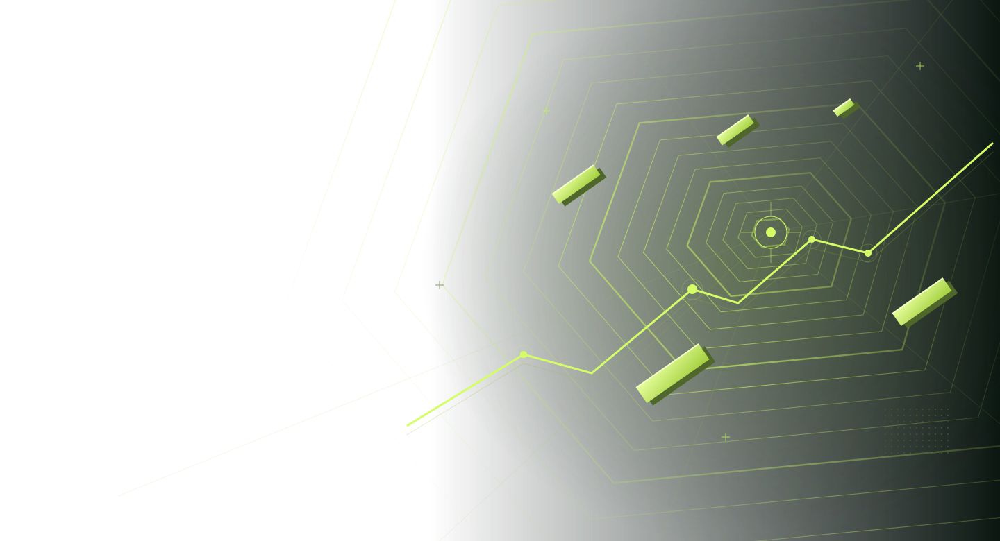

YOUR DAILY DOSE OF RHYTHM VOL. 002 / FEEL EVERY BEAT

浏览器里的节奏游乐场
让节奏，
接管你的指尖。
三种玩法，无限心流。
按下开始，世界只剩下你和节拍。
FIND YOUR FREQUENCY128 BPM · NEON CIRCUIT
01 / 0601 /
CHOOSE YOUR MODE选择你的节奏
不同玩法，同样上头。02 /
全部曲目 今日播放列表
从轻松暖手，到全速心流。好手感，从对上节拍开始。推荐佩戴有线耳机；如果感觉音画不同步，可以在设置中微调判定偏移。
THE SOUND COLLECTION 06 ORIGINAL TRACKS
找到你的频率。
六首原创电子音乐。每首都能用三种方式打开。
曲目 / TRACK节拍时长操作
所有曲目均为本站原创合成音乐，每种模式都有独立谱面。
YOUR PERSONAL BEST EVERY BEAT COUNTS
每一拍，都算数。
你的最佳表现，留在这里。成绩保存在当前浏览器。